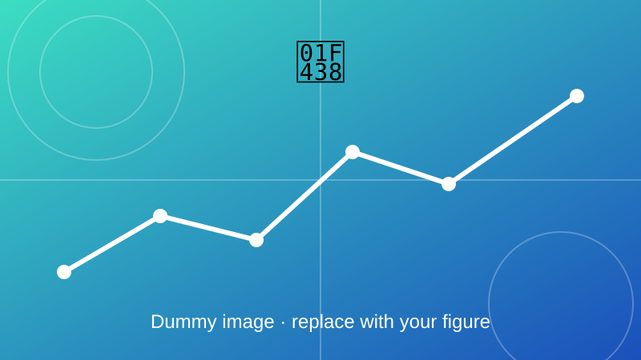

Amphibian Robot
A robot that works both on land and in water.

Overview
A robot that works both in water and on land. DPDT switches control its motion, a computer SMPS provides the power supply, and it can perform specific tasks as assigned.
Objectives
- Move on land and in water with the same body.
- Control the motion with DPDT switches.
- Power the robot from a computer SMPS supply.
Method and key equations
The body must be light enough to float, and the motors must overcome water drag. DPDT switches reverse the motor polarity to change direction.
Buoyant force from the submerged volume \(V_{\mathrm{sub}}\); the robot floats when its average density is below the density of water \(\rho_w\).
DC motor model: supply voltage balances resistive drop and back-EMF, and torque is proportional to current.
Drag force in water, which grows with the square of speed \(v\).
Demo
Outcome
Add your results here: key findings, figures, and links to the related paper or code.